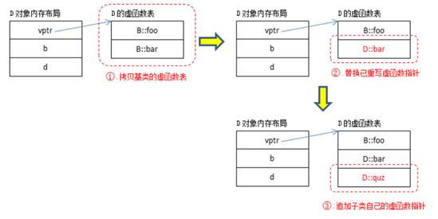

C++类对象的内存分布
C++中类初始化成一个对象之后，该对象实例在内存中是如何分布的呢？
空类情况
如果实例化一个空类，这个对象会在内存中占用1个字节。目的只是标识一下，这是一个类实例（因为不占的话，就和空数据没什么区别）。
含基本数据，不含函数的情况
#include <iostream>
using namespace std;
class A{
char a;
int b;
char c;
};
class B{
char a;
char c;
int b;
};
int main(){
cout<<sizeof(A)<<endl;
cout<<sizeof(B)<<endl;
}
假设在32位系统下，char 占1字节，int 占4字节。上面代码的结果是不同的。
答案分别是：
12
8
原因在于：
c++类成员变量的内存分布是 从上到下 ，按照内存对齐的原则进行分布的。
内存对齐的原则如下：
1、 分配内存的顺序是按照声明的顺序。
2、 每个变量相对于起始位置的偏移量必须是该变量类型大小的整数倍，不是整数倍空出内存，直到偏移量是整数倍为止。
3、 最后整个类的大小必须是里面变量类型最大值的整数倍。
根据上面的原则推断A类的大小：
（1）char a 占1字节，目前为止A类 占1字节。
（2）int b占4字节，但是如果b直接放在a后面，那么起始位置就不是4的整数倍，所有b要在a后面空3个字节，然后放。 所以目前为止A类 占8字节（3个空）。
（3）char c能直接放到最后。但是第3条规定，整个类的大小必须是 4（int最大）的倍数。所有c后面还要空3字节。 所以目前为止A类 占12字节（6个空）。
同理推断B类大小：
（1）char a 占1字节。目前为止B类 占1字节。
（2）char c占1字节。能直接放a后面。目前为止B类 占2字节。
（3）int b占4字节，但是如果b直接放在c后面，那么起始位置就不是4的整数倍，所有b要在c后面空2个字节，然后放。 所以目前为止A类 占8字节（2个空）。
补充
（1）除了类，联合和结构体也是这样的对齐规则。
（2）为什么要对齐
a.平台原因(移植原因)：某些硬件平台只能在某些地址处取某些特定类型的数据，不能访问任意地址。
b.性能原因：访问未对齐的内存，处理器需要作两次内存访问；而对齐的内存访问仅需要一次访问
带成员函数的类
#include <iostream>
using namespace std;
class A{
char a;
int b;
char c;
int func(){
cout<<"成员函数"<<endl;
}
};
int main(){
cout<<sizeof(A)<<endl;
}
上面代码的结果还是：12 （ 一个对象所占的空间大小只取决于该对象中数据成员所占的空间，而与成员函数无关。 ）
用类去定义对象时，系统会为每一个对象分配存储空间。如果一个类包括了数据和函数。数据的内存分布如上所示。而函数是不占实例内存的，因为一个类的函数是公共的，一个类的函数只有一份。
那么函数存放在哪呢。这个不同的编译器，有不同的方式。有的存放在只读区，有的存放在代码区。
带虚函数的类
#include <iostream>
using namespace std;
class A{
virtual int func1(){
cout<<"虚函数"<<endl;
}
char a;
int b;
char c;
int func(){
cout<<"成员函数"<<endl;
}
};
int main(){
cout<<sizeof(A)<<endl;
}
上面代码的结果还是：16 （ 虚函数表指针占用了4个字节，32系统 ）
这里需要注意的是，虚函数表是每个类一份。但是因为虚函数在运行的时候才能确定，所以每个实例都需要一个虚函数表指针，如下图所示：

虚函数表的生成过程

父类的虚函数表会根据本身虚函数自动生成
子类的虚函数表会先拷贝父类的表，然后替换和父类中一样函数的，最后补上子类自身的函数
PS：虚函数表会继承，但是不同的父类还是会有多个虚函数表。
例如：
A->B->-C ：表示A被B继承，B被C继承。 这个时候C只有一个虚函数表。
但是：
A->C
B->C （A,B没有继承关系）
如果是这种情况，C会有两个虚函数表。C的实例会有俩个虚函数表指针（会占8字节）